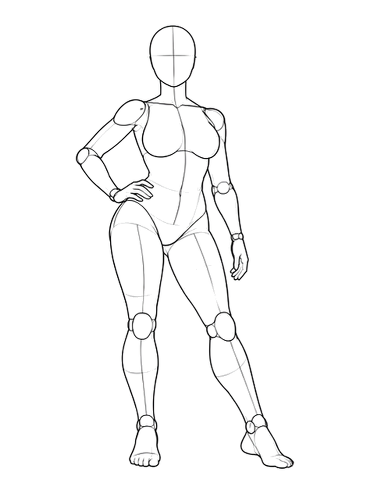

人物资产制作台
同一组人物、服装与姿势，换个布局试试。原型不提交订单。
人物参考画布
输入参考等待面部参考face.png
等待全身参考body.png · 可选

衣橱选料架
点单品加入搭配，再点一次移出。
首张校样审核
无成片 · 未审核暂无生成图成片槽位 · 2:3
首张要核对什么？
- 面部是否保留 v5a2 的身份特征
- 身形比例、手脚和重心是否自然
- 选中单品的颜色与版型是否一致
后续姿势对照
沿用首张的人物与服装，只核对新的重心和手臂位置。
尚未演练。通过后可查看后两格姿势。
查看本次人物与服装参考
v5a2 面部 · 待放入
11-26 三视图全身比例 · 待放入（可选）